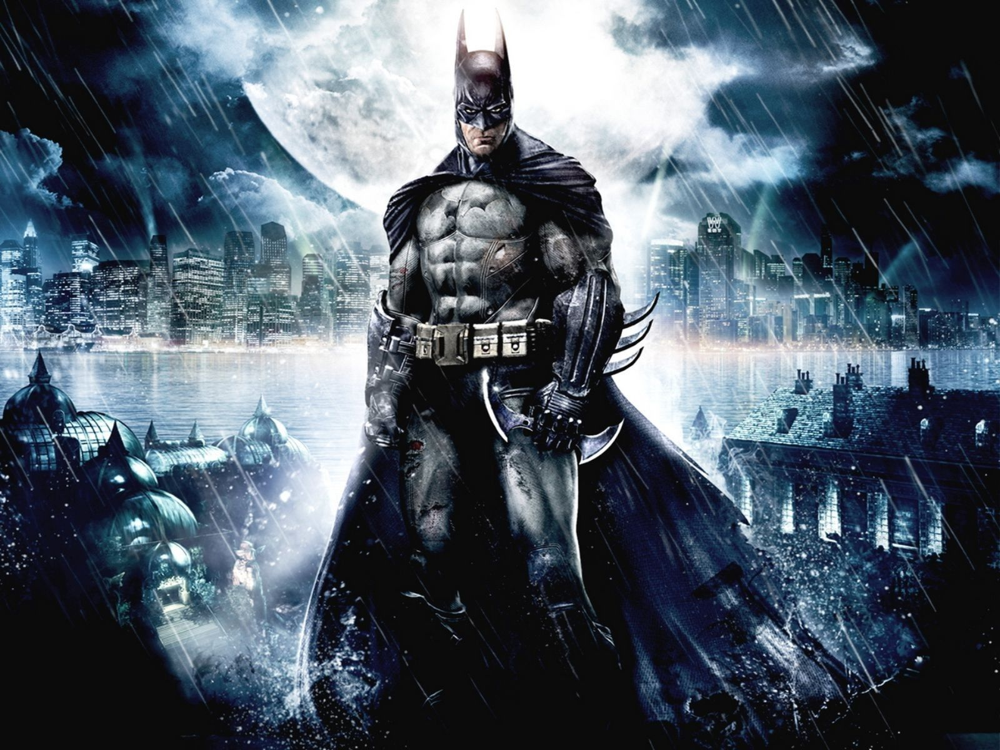

Batman
The man who inspired my life

Batman's biography from different times
- Origin:The central fixed event in the Batman stories is the character's origin story. As a young boy, Bruce Wayne was horrified and traumatized when he watched his parents, the physician Dr. Thomas Wayne and his wife Martha, murdered with a gun by a mugger named Joe Chill. Batman refuses to utilize any sort of gun on the principle that a gun was used to murder his parents. This event drove him to train his body to its peak condition and fight crime in Gotham City as Batman. Pearson and Uricchio also noted beyond the origin story and such events as the introduction of Robin, "Until recently, the fixed and accruing and hence, canonized, events have been few in number", a situation altered by an increased effort by later Batman editors such as Dennis O'Neil to ensure consistency and continuity between stories
- Golden age: In Batman's first appearance in Detective Comics #27, he is already operating as a crime-fighter.[120] Batman's origin is first presented in Detective Comics #33 (Nov. 1939) and is later expanded upon in Batman #47. As these comics state, Bruce Wayne is born to Dr. Thomas Wayne and his wife Martha, two very wealthy and charitable Gotham City socialites. Bruce is brought up in Wayne Manor, and leads a happy and privileged existence until the age of eight, when his parents are killed by a small-time criminal named Joe Chill while on their way home from a movie theater. That night, Bruce Wayne swears an oath to spend his life fighting crime. He engages in intense intellectual and physical training; however, he realizes that these skills alone would not be enough. "Criminals are a superstitious cowardly lot", Wayne remarks, "so my disguise must be able to strike terror into their hearts.
- Silver age: The Silver Age of Comic Books in DC Comics is sometimes held to have begun in 1956 when the publisher introduced Barry Allen as a new, updated version of The Flash. Batman is not significantly changed by the late 1950s for the continuity which would be later referred to as Earth-One. The lighter tone Batman had taken in the period between the golden and silver ages led to the stories of the late 1950s and early 1960s that often feature many science-fiction elements, and Batman is not significantly updated in the manner of other characters until Detective Comics #327 (May 1964), in which Batman reverts to his detective roots, with most science-fiction elements jettisoned from the series.After the introduction of DC Comics' multiverse in the 1960s, DC established that stories from the golden age star the Earth-Two Batman, a character from a parallel world. This version of Batman partners with and marries the reformed Earth-Two Catwoman, Selina Kyle.
- Bronze age: In 1969, Dick Grayson attends college as part of DC Comics' effort to revise the Batman comics. Additionally, Batman also moves from his mansion, Wayne Manor into a penthouse apartment atop the Wayne Foundation building in downtown Gotham City, in order to be closer to Gotham City's crime. Batman spends the 1970s and early 1980s mainly working solo, with occasional team-ups with Robin and/or Batgirl. Batman's adventures also become somewhat darker and more grim during this period, depicting increasingly violent crimes, including the first appearance (since the early golden age) of the Joker as a homicidal psychopath, and the arrival of Ra's al Ghul, a centuries-old terrorist who knows Batman's secret identity. In the 1980s, Dick Grayson becomes Nightwing.
For more information on batman Click This